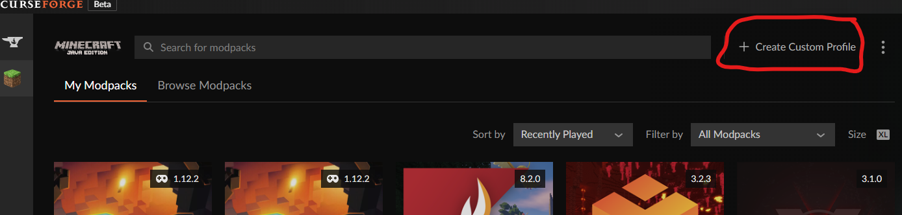
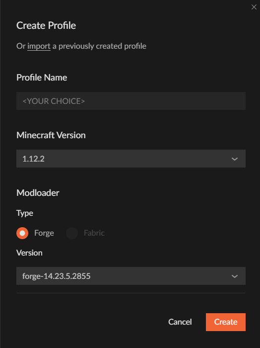
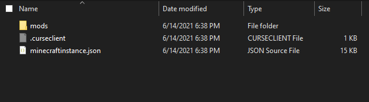
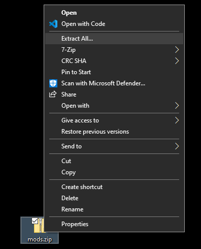
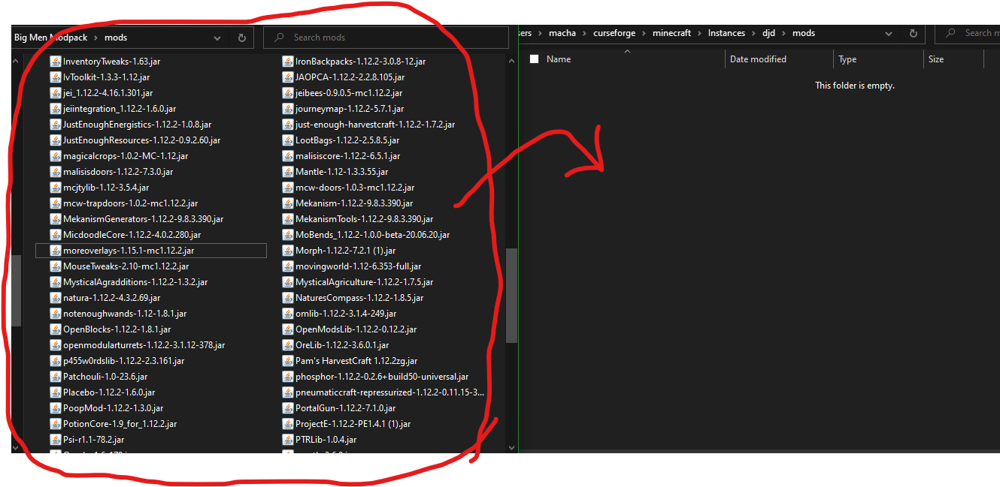
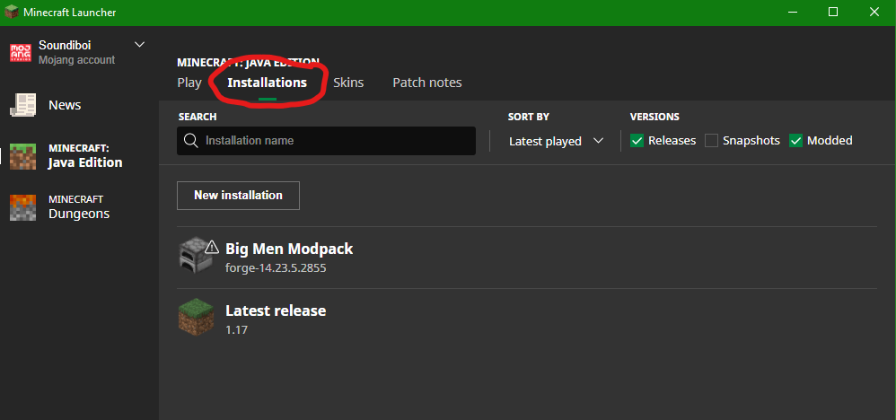
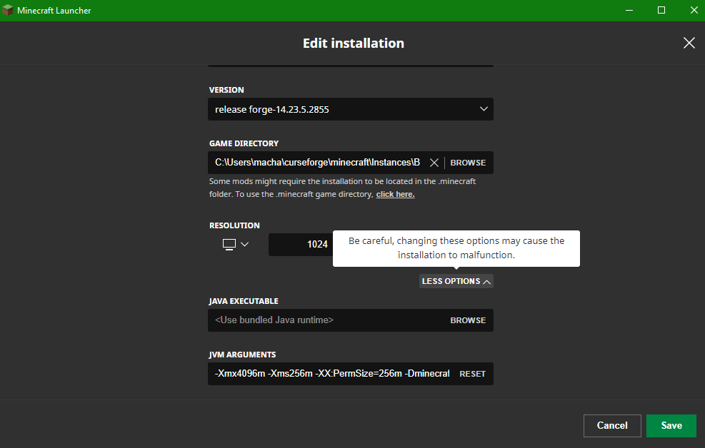

Download Modpack
Instructions:
1.Open CurseForge and select create custom modpack.

2.Use the following settings for the profile. The name is up to you.

3.After pressing create a new profile should appear in the modpacks section. Right-clicking this will bring up a context menu, proceed to click open folder next.

4. Now
click this to download the mods folder. Open it in file explorer.

5.Now drag both explorers next to each other. Open the mods folder. Now drag the mods from the zip folder into the modpack mods folder.

6.You're done with that. Clise the explorers and start the modpack from CurseForge. From here go to the installations tab at the top.

7.Now hover over the modpack, it should have a furnace icon as opposed to a grass block. Click the 3 dots and click edit, scroll if neccessary and click more options.

8. Go to
JVM ARGUMENTS and change -Xmx4096m to -Xmx6G *Capitalization is important'. Now click save. You will have to do this step each time you wish to play.
You are ready to go!